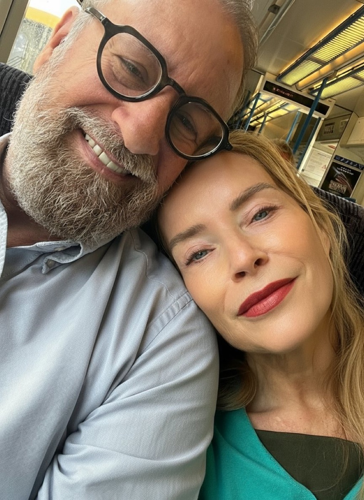
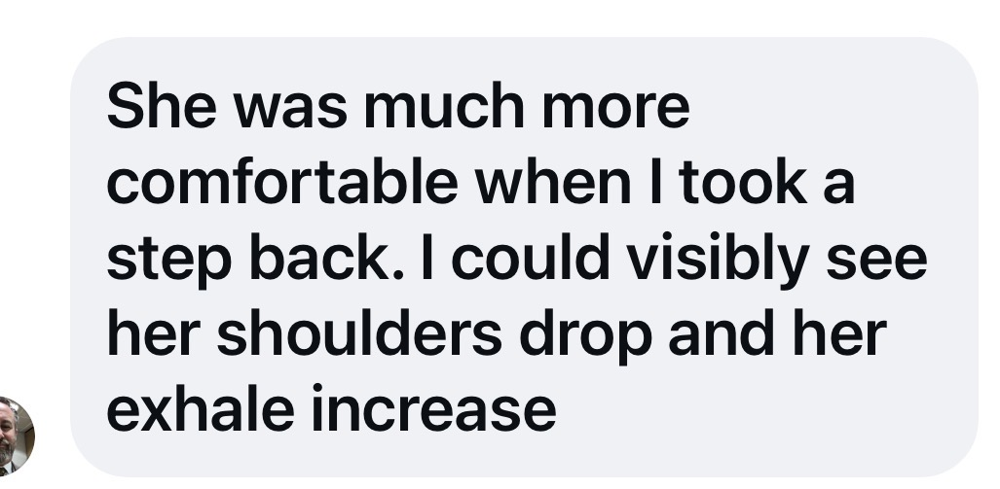

What is actually happening
She went quiet.
Not a row. Nothing you can point at.
The temperature changed, and you noticed it before anyone said anything.
So you did the reasonable thing. You tried harder.
You asked if she was okay.
You asked again, differently.
You were attentive. You were patient. You gave her space.
Then you worried the space was the wrong move and came back in.
And she got further away.
Here is the piece nobody tells you.
Trying harder can become part of the problem.
Because when you're worried about the distance between you, your attempts to close it can start carrying something else with them.
Are we okay?
Are you okay?
Is this working?
Do you still want me?
You may not say any of that out loud.
But another check-in, another question, another attempt to get closer can start to feel like something she has to respond to.
So you feel the distance and try harder to close it. She wants more space. You feel that space and try again.
Now you're in a loop.
Not because you don't care.
Because you care, and you don't know what else to do with the distance.
This practice asks you to do something different.
Stop trying to close the gap.
For five minutes, she gets to determine the distance. Your job is to find out where she actually is.
What this is
Fifteen minutes. One sitting.
And you touch nobody until she says so.
There are three parts, in order.
- 1Touch Base · five minutes, on your own
Before you approach her, you spend five minutes with yourself.
One tiny point of contact between your thumb and forefinger. Slow enough to notice what you're actually doing rather than rushing towards the next part.
Before you pay attention to her distance, you pay attention to yourself.
- 2The Approach Ritual · five minutes
You begin with space between you. You are the one who approaches. She determines the distance.
She can stop you. Invite you closer. Ask you to move back. Move towards you herself.
For five minutes, you don't persuade, interpret or try to get somewhere. Your job is to listen.
- 3The Full Stop
At the end, you say one true thing about what you noticed. One sentence. Then you stop.
No question. No fishing for reassurance. No turning it into a conversation about the relationship. Nothing she now has to answer.
One true thing. Full stop.
That's the practice.
You'll notice there is no conversation about "us" anywhere in the fifteen minutes. That's deliberate.
For these fifteen minutes, you're not trying to solve the distance. You're learning to meet it differently.

Setting it up
Ask her once, plainly. Don't sell it.
Then leave the answer with her.
If she says no, it's no.
If she says yes, choose a time when you both have some capacity for it. A morning. An afternoon. Early evening.
Not when you're already in the middle of a difficult conversation or trying to repair a row.
- Phones in another room.
- You'll need a timer and enough floor space to stand a few steps apart.
That's it.
Touch Base

Before you go anywhere near her, come back to your own body.
Thumb and forefinger. That's all of it.
Watch it once so you can see exactly what I'm doing with my hands. After that, the audio is all you need.
- 1Set your timer for five minutes
- 2Start a centimetre apart
Don't touch yet. Notice the gap. Notice what you can actually feel before contact happens.
Don't try to make yourself feel anything in particular. Just notice.
- 3Then land
Bring your thumb to the tip of your index finger, right at the corner of the nail. Stay there.
Notice the contact. Pressure. Temperature. Texture. Whatever is actually there.
- 4Make the smallest movement
Half a centimetre. Light. Slow like honey. Slower than that. Slower than you think slow is.
You aren't trying to calm yourself down. You aren't trying to get into the "right" state before you approach her.
You're giving yourself five minutes to notice how you're arriving.
Why that spotThe corner of the nail on your index finger+
In traditional Chinese medicine, this point is known as LI1, Shangyang, the first point on the Large Intestine meridian. That's where I want you to touch.
But you don't need to understand meridians, believe anything about energy, or make something happen through the point.
For this practice, its job is much simpler. It gives you one tiny, precise place to put your attention.
Instead of thinking about what she's going to do. What the distance between you means. Whether this is going to work. Whether you're about to get rejected.
You're here. Thumb. Finger. Contact. Movement. Something small enough to actually notice.
Why it comes before you moveNoticing before acting+
Because before you find out where she is, I want you to notice how you're arriving.
You may be impatient. Hopeful. Tense. Already trying to get a particular result. You may notice you're holding your breath or rushing even though nobody has asked you to hurry. Or you may notice very little.
There is no state you're supposed to achieve. Touch Base isn't five minutes of getting yourself "right" so that she'll respond differently. It's five minutes of noticing yourself before you start moving towards her.
Because in the next part, you're going to be asked to do something that may be unfamiliar: approach without deciding how close you get. Stop when she asks you to stop. Move back if she asks you to move back. Notice whatever comes up in you when the distance isn't yours to choose.
Touch Base is where you practise noticing before acting. Then you take that with you into the Approach Ritual.
The Approach Ritual
My partner and I demo it for you.
Two minutes of me talking you through it before you begin. Or read it below.
- 1Set a timer for five minutes
Stand facing each other with some distance between you.
- 2She stays where she is. You are the one who moves.
Walk towards her. Slowly. Much more slowly than feels natural. A step. Then a pause.
- 3She lets you know when to stop
She can say stop, put a hand out, or use whatever clear signal the two of you have agreed on before you begin.
When she says stop, you stop.
- 4Then explore the distance
She might ask you to take a small step back. She might invite you closer again. She might move towards you herself.
Let the distance change for the whole five minutes.
Keep your phone where you can hear it. My voice starts on its own when the timer ends.
Your job is very simple.
Do not interpret the distance she chooses.
This is the discipline of the ritual.
If she stops you at four feet, your mind may immediately start telling you a story.
- Four feet means she doesn't want me.
- Four feet means we're worse than I thought.
- Four feet means I've done something wrong.
But you don't actually know that.
Four feet means four feet today. That's all the information you have.
More space does not mean less love.
This isn't a test of your relationship. It isn't a measure of how close either of you should want to be.
For five minutes, let her show you where her edges are today, without asking her to explain or justify them.

From a man who did it
Notice what happens in you.
- If you feel disappointed when she asks you to move back, notice it.
- If you feel relieved when she invites you closer, notice that too.
- If your mind immediately starts trying to work out what the distance means, notice that.
You don't need to make any of it her job.
- Don't persuade.
- Don't bargain for another step.
- Don't turn your reaction into something she now has to reassure you about.
She chooses the distance. You practise listening to it.

The Full Stop
When the timer goes, stop. Then say one true thing out loud about what you noticed.
One sentence.
Then nothing.
- No question mark on the end.
- No "How was that for you?"
- No "What did you notice?"
- No little look that asks her to tell you whether you did it right.
That is a Full Stop.
You're saying something true about your experience without turning it into something she now has to answer. That's the discipline.
Because the moment you add a question, you've given her something else to do. Respond. Explain. Reassure. Tell you how she feels.
Your honesty. No invoice attached.
She may say something. She may say nothing. Either is fine.
You're not owed a response. You're not using the silence to get one.
Then leave it.
Don't immediately discuss the ritual. Don't ask her how it was for her. Don't ask what the distance meant. Let the Full Stop actually be a full stop.
What you might notice
This may feel strange. Slow. Awkward.
You may want to speed it up. You may want to make a joke. You may find yourself watching her face for clues about whether you're doing it right.
Notice that.
During the Approach Ritual, you might discover how quickly you make the distance mean something.
Closer feels good.
Further away feels bad.
A pause feels like rejection.
An invitation feels like reassurance.
Or you may notice something completely different.
The point isn't to have a particular reaction. It's to notice the reaction you actually have without immediately acting on it.
Afterwards, it might be quiet. Let it be quiet.
You don't need the ritual to produce a visible result in the room. You don't need to watch her the following day for evidence that it "worked." That would put you straight back into trying to get a result from her.
What you're practising is simpler:
- Can you notice yourself before you approach?
- Can you let her determine the distance?
- Can you hear stop without turning it into a story?
- Can you receive an invitation without immediately reaching for more?
- Can you say one true thing without requiring anything back?
That's the skill the fifteen minutes is there to practise.
If you lose the structure
You might. That's okay.
She doesn't want to do it.+
Don't persuade her. Don't explain why it would be good for the two of you. Don't ask again differently.
Her no is already part of the practice.
You can still do the five-minute Touch Base on your own. Not as a way of getting her to change her mind. As a way of noticing yourself when you don't get the answer you wanted.
She stops you further away than you expected.+
Stop. That's the practice.
Don't ask why. Don't try again from a different angle. Don't negotiate another step. Don't decide what the distance says about your relationship.
Four feet means four feet today. Stay with what is actually happening rather than the story your mind makes about it.
You interpret the distance out loud.+
Catch it. You can simply say:
"I made that mean something. That was me."
Then stop. No apology spiral. No explanation of why you reacted that way. Come back to the practice.
It turns into a conversation about the relationship.+
Stop the ritual. You don't need to drag it back into shape. You don't need to use the remaining minutes because you started them.
Nothing has been lost. Come back another day if you both want to.
Keep the fifteen minutes to the fifteen minutes.
Five minutes with yourself. Five minutes letting her determine the distance. One true thing. Full stop.
Touch Base. Approach. Full Stop.
You weren't trying to make her come closer. You weren't trying to get reassurance that everything between you is okay. You weren't trying to solve the relationship in fifteen minutes.
You were practising something much smaller: noticing yourself. Listening to the distance. Not immediately trying to change it.
That's the practice.